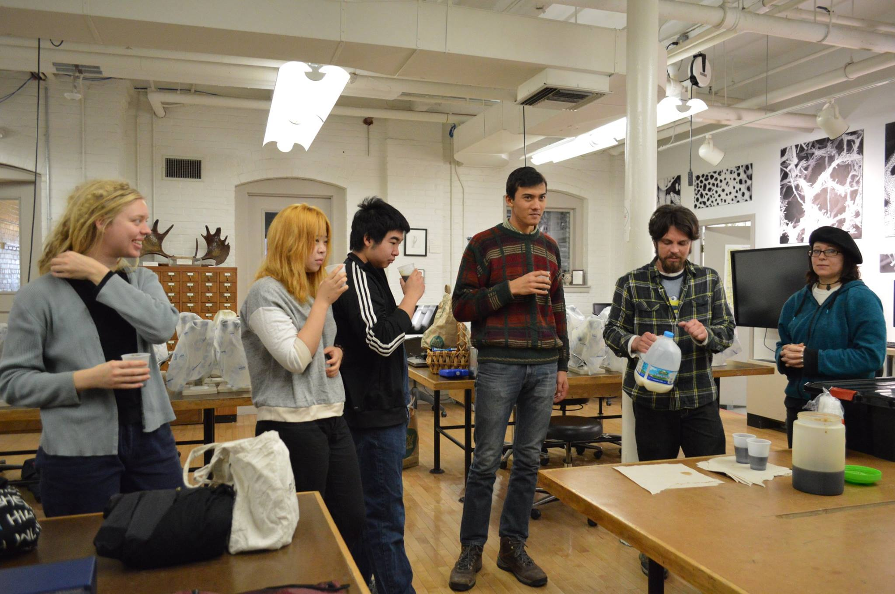

In its fourth iteration this year, Brown, RISD, MIT, and BU STEAM hosted the City + Data workshop series, held between campuses in Providence and Cambridge/Boston over the month of January. The four-week series culminated with a final exhibition at the RISD GD Commons. The City + Data series continued a structure of putting an Analog and a Digital presence in dialogue with each other. The series was preceded by “Human + Computer,” dealing with topics of transhumanism, “Body + Internet,” on topics of telepresence, and “Citizen + Virtual,” discussing questions of digital citizenship. This year’s series looked at the City in relation to Data—both big and small, quantitative and qualitative:
“The city is the most interdisciplinary of spaces, bringing questions of environment, transport, economics, civic design, and more. But as cities get more complex and citizens provide and upload more data about their experiences, we must reconsider how big data defines a city and functions within this space. How do we harness and share this data? How do we use it to drive innovation? How do we make it accessible and open?”
The series was coordinated by Jeremy Joachim (Brown, Mechanical Engineering), Minsoo Thigpen (Brown/RISD Dual Degree, Applied Mathematics, Painting), Kenji Endo (Brown, Computer Science), Cyrus Maden (Brown, Applied Mathematics), Grace Li (MIT, Mechanical Engineering), Hayley Walker (BU, Mechanical Engineering), Brian Oakes (RISD, Sculpture). City + Data TAs Jamie McPike (Brown PhD, Sociology), Heather Sha (Brown Grad Student, Computer Science), Evan Daniels (RISD Grad Student, Digital + Media), Val Healy (MIT Undergraduate Student, Comparative Media) facilitated workshops and provided TA mentorship for participant projects over the course of the series.
A call for applicants was put out in the fall, and participants from Brown, RISD, and MIT were selected, from a variety of background in skills, disciplines, class levels, and former experience in the area of City + Data. These participants would be meeting at MIT, Brown, BU, and RISD over the course of January, learning, discussing, and approaching topics within City + Data in five final project groups.
Week 1
City + Data’s first session kicked off in Providence at RISD’s Center for Integrative Technologies (CIT). Over bagels and coffee, the members of the cohort met each other as well as their TAs and coordinators. After welcoming the group and introducing STEAM, Jeremy and Jamie led a brief exploration of the words City and Data in isolation, one word analog and the other more digital. We discussed what it would mean to bring those two spaces together in City + Data and what types of thinking we encouraged the cohort to pursue. It was then that they would learn their assigned groups for the series and have time to get to know each other over lunch. Afterward, the day continued with small workshops led by TAs Val, Evan, and Jamie, where the cohort learned more about the topics they were entering as well as the TAs that would serve as their resources throughout the series. Finally, the day concluded with a walking tour of downtown Providence led by Minsoo, Jeremy, and Brian, expressing the necessity to understand the tangible history of places throughout a city before even beginning to think about creating for it.
Week 2
The second session was also held in Providence, starting in RISD’s Nature Lab with a tour of microscopes and a 3D scanner led by Stephanie Muscat. Before lunch, guest and RISD instructor Chris Novello gave a talk about computation and its different forms and the importance of the way in which it represents the incredibly personal and powerful medium that is data. The talk opened up into an open discussion with the whole cohort before concluding. After lunch, the final set of workshops took place up College Hill at the Brown Design Workshop, led by Val and Heather, Brian and Zak, and Jamie. The cohort ended the day themselves with presentations of their initial research and potential projects for feedback from their peers.

Week 3
For the third meeting, City + Data traveled up to Boston for a session held at Boston University’s EPIC (Engineering Product Innovation Center). BU STEAM’s Hayley Walker led the City + Data participants on a tour of the facilities and tools at EPIC.

After a morning of play-testing and troubleshooting final project ideas in project groups, City + Data was joined by BU faculty Madhu Dutta-Koehle and Ayako Maruyama from the BU College of City Planning & Urban Affairs, for a conversation on data. Dutta-Koehle and Maruyama discussed perspectives on data as urban planners—introducing the variety of forms of data one may use to understand the city. Dutta-Koehle and Maruyama encouraged participants to go beyond the realm of numbers, as “all the quantitative data in the world isn’t going to give you a sense of the ‘in-betweens.’” Qualitative data can offer a more human-centered approach, with a more nuanced understanding that may provide context for the politics, cultures, and ethos of a city’s communities. Maruyama discussed her work at the Design Studio for Social Intervention (DSRSI), a group focused on the use of collaborative and inclusive data collection with civic and citizen engagement. The afternoon concluded with discussed and crits of in-progress final projects by participants, TAs, and guest critics Dutta-Koehle and Maruyama.

Week 4

The fourth session was held back in downtown Providence at the RISD E'Ship space, where teams participated in a discussion led by guest Ann Kidder from Sidewalk Labs on responsible data use in the public realm, on notions of data collection, transparency, security, and corporate and government accountability. Afterwards, groups split off and set up their final prototypes for critique later that afternoon. In addition to Ann Kidder, Chris Novello would rejoin the group for the final critique. His biggest message to all of the groups was for them to work harder to make the audience feel something with their pieces—to understand the statements they were making and avoid watering them down. Chris urged the groups to go simpler and more powerful as opposed to trying to impress the audience with flashy presentations and buzzwords. The groups took this advice to heart and went on in the next week to finish their pieces with newfound senses of purpose.

Gallery Opening

With the sessions finished, the series culminated in the one-night gallery opening at RISD's GD Commons space. The five pieces were received with high praise from over 100 attendees. Members of the cohort were able to present their work to the viewers and, equally importantly, to each other. After an arduous few weeks of late nights consumed in their own projects, it was a good opportunity for the groups to see the work of their peers and the ways in which they responded to similar themes.
See more about the City + Data series on the workshop site, and see more pictures of the final Exhibition. Read Our RISD’s write up, Beyond Sheer Numbers, of the event series.
Brown STEAM teamed up with the Better World by Design conference again this year, presenting a workshop on Cybernetics, virtual communities and their dynamics, on the second day of the conference in September 2016 in the Pneuhaus STEAM Pavilion . Better World by Design is a student-organized conference held annually at Brown and RISD that facilitates collaboration between designers, educators, and innovators. In its ninth iteration, this year’s conference was centered around an idea of Interplay—in its Micro, Meso, and Macro forms.
Within this theme, Brown STEAM was interested in exploring interplay and community dynamics in the digital space, extending from previous STEAM projects and workshops, particularly the annual Human + Computer , Body + Internet, Citizen + Virtual, wintersession workshop series. Presented by Brown STEAM project leaders Taylor Alarcon (Brown ’17), Kenji Endo (Brown ’18), and Jeremy Joachim (Brown ’17), the hour-long interactive workshop dealt with topics of social norms and laws of virtual communities online, how non-real virtual citizens such as Twitter bots affect our definition of people online, and the influence of natural language processing and social algorithm research on mass communities such as Facebook. How are the “laws” of virtual communities defined and learned? What counts as a “person/a” online? How do the dynamics of digital communities affect real-world ones?
Cybernetics is a somewhat nebulous term, which developed as a concept in modern times from MIT Mathematics professor Norbert Wiener’s 1948 book, “Cybernetics.” Wiener defined cybernetics as the “control and communication in the animal and machine”, a way to refer to control of any system using technology. In the context of the workshop, we focused on the communication component to cybernetics, focusing on communication between individual agents online (human <-> human, human <-> computer, computer <-> computer) and the control and influence of mass systems, such as social communities online, via technology.
Codes of Conduct: The Laws and Social Norms of Digital Communities
First, we discussed the unofficial social expectations and rules of virtual communities, such as chat rooms, forums, blogs, virtual worlds, fandoms, and even relationship-based communities, such as Tinder or Facebook. These virtual communities hinge on systems of transaction, interest, fantasy, or relationships. Within these groups, virtual citizens may fall into roles as constructors or contributors. The lifecycle of a citizen, particularly for a fantasy or role-playing community, can be considered as a path from lurker (outsider) → novice (newcomer) → regular (full participation) → leader (sustains participation and interaction) → elder (outgoing, change in interest). Understanding of community “netiquette”—values, culture, norms, and communication—is essential for full participation and acceptance.
The Online Uncanny Valley: Real v. Non-Real Virtual Citizens
Next, we discussed the presence of fake users online (non-real virtual citizens), and the impact of these citizens on how we define a ‘person’ online. Violations to expected syntax and social behavior online (netiquette) may be perceived with an intuitive sense of strangeness within a community. How do we define who is real or fake online? Online platforms, such as Facebook, Twitter, and Instagram, are saturated with fake users. We might consider fake users to be porn bots on Instagram and Tumblr, or spam bots, which post links to get other users to download software. Sometimes a ‘real’ person’s account is compromised. Fake users online can perhaps fall into the “uncanny valley,” a concept in robotics and CG that human replicas that appear almost, but not quite, like real humans are the creepiest.
Alone Together: Navigation of Large-Scale Communities
Finally, we looked at the ways in which our automated identities interact on our behalf with others and others’ automated identities (computer <-> computer). We introduced the topic with an explanation of how machine learning is used to perform tasks and make preliminary decisions in our likeness. Personalized bots allow us to make decisions between only a few choices, relieving us from the initial task of pruning large lists with unrealistic choices. For example, when at a restaurant, most people have certain dishes that they know they would never order due to allergies, preferences, and other dietary restrictions. The job of a personalized computer assistant would be to search through the menu of 30-40 items and present you with 5 or 6 to choose from, much like the chef themself would if you had an established relationship and they knew your taste. The benefit here is that the bot can search through the menu virtually instantly, giving you the luxury of not having to look through it ourselves or make a long-term investment in a personal chef. What is gained is extra time and less to think about, but what is lost is worth exploring, and that is where the final piece of this talk was going.
Technology has always allowed people to increase their rates of production by augmenting human capabilities. What is created is larger than what a human could produce on their own, but so long as the human is still the driving force behind what is created, people are comfortable with giving up ownership for productivity. Machine learning and natural language processing use large data sets to dance around this line, particularly in two ways: content curation and content synthesis. Content curation works like the example of the restaurant, and companies like bernie.io are already using them for applications such as Tinder in order to present users with only the matches they would be interested in. The bot swipes through Tinder at high speeds in the user’s likeness, trained to align with the user’s facial preferences; afterward, the bot sends a couple of pre-written messages to each match and gives the user a notification when a conversation seems like it might have potential. The question is then, what happens to all of the potential matches that the bot rejects or for which it decides not to notify the user? Do we sacrifice free will in exchange for “more efficient” Tinder usage? Even further down that line is content synthesis, which not only collects options to present to the user but also generates content in the user’s likeness. Google Allo for instance uses natural language processing and sentiment analysis to read text conversations and suggest responses based on the observed speech patterns both users. There is an added convenience here in having our computers speak to each other so that we’re free to perform other tasks, but it is important that we are constantly asking ourselves: where is the line, and what are we willing to give up?
The workshop ended with a breakdown of what fundamentally drives a virtual community. There are members, and there are the actions of members, that allow a community not only to sustain itself, but to grow and develop. Without members, a community cannot exist, and without activity, a community cannot build and evolve. The parting question to the group was: “how do digital agents occupy membership and activity in order to drive virtual communities, and how can we be more aware of their influence?” This led into a twenty minute discussion with the rest of the group around ways to increase awareness not necessarily from a perspective of concern but from one of knowledge. How can we educate ourselves and others in order to maintain control over the power of these digital agents?
On December 3rd, 2016, about 40 Brown and RISD students converged on the Brown Design Workshop (BDW) for the inaugural STEAM Useless Hackathon, where participants were given a day to build projects with absolutely no practical value. Based on NYU’s “Terrible Ideas Hackathon” of February 2016, the event was meant to provide a fun and lighthearted way to let participants simply enjoy the act of making without having the pressure to make something practical or useful. With its hackathon-style schedule and structure, the Useless Hackathon allowed participants to walk away with a finished project and a fun story.
With a 10AM start, and plenty of bagels to go around, the 40-odd participants filled the main area of the workshop, milling about and discussing their ideas. As the event began in earnest, people lined up for the microphone, pitched their project ideas, and formed teams based on what sounded like the most fun, hilarious projects to make. Armed with the various machines, tools, and materials of the BDW, together with knick knacks from the Providence Recycling Center and electronics like Arduinos and sensors, the participants kicked off their work. With the help of the Useless Hackathon planning team (who also served as mentors) and the BDW’s monitoring staff, projects moved along swiftly, and by the end of the day everyone had created something they were happy to present.
Instead of concluding with judging and prizes,the Useless Hackathon segued into “C R A P: An Exposition of Worthless Garbáge,” a gallery-style exposition in which participants showed off the not-so-serious fruits of their work to the public. Projects ran the gamut from physical to digital, and everywhere in between. On the digital side were projects like Arjun Narayen’s “How to Screw,” which, despite its suggestive name, is a literal guide on how to drive metal screws into objects. Other creations included David Schurman’s “Useless Word Processor,” which produces text that’s almost completely unintelligible by randomly changing some of the typer’s keystrokes into backspaces, as well as Zach Deocadiz and Josh Shao’s “Useless Type Foundry,” a typeface where every letter is a drawing of a food item starting with that letter.
The physical projects included the “Umm...brella” by Grace Young, Jillian Cai, Kay Liang, and Danny Kim (an umbrella that drips water on the person holding it), “Disaster” by Hannah Blakely, Erin Bugbee, Shawna Cheng, Wendy Cohen, and Sophie Saskin (a horrifyingly dangerous take on a traditional marble track), “Finger Hats” by Elizabeth Austin (tiny hats that keep your fingertips warm when you wear fingerless gloves), and “Inverted Kitchen Utensils” by Katie Wu (kitchen utensils like spoons with holes, knives with blunt blades and sharp handles, and forks with a solid head and segmented handle).
Umm...brella (Grace Young, Jillian Cai, Kay Liang, and Danny Kim)
Finally, there were plenty of projects that combined physical electronics with programming. For “Hat+Fly,” Jeremy Joachim, Ethan Mok, and Erin Cole sewed a drone onto a hat in attempt to create an overpowered kid’s propellor hat. “Pillow Talk” by Anya Parakh, Raina Wellman, Tiffany Chiu, and Khue Truong was a pillow containing a Bluetooth speaker, an Arduino, and an accelerometer––when you lie down for a nap, the pillow whispers to you. “Screamleanmachine” by Lucas Kasser, Laura Blackstone, May Tomic, and Josh Roy used a Raspberry Pi and Wii Balance Board make a special computer mouse: you move the pointer by leaning on the board and click by screaming into a microphone. Last (but certainly not least), there was “Nutellapresence.” A project by Kenta Kondo, Mandi Cai, and Robert Wang, the “Nutellapresence” robot drove around randomly, excreting a trail of Nutella onto the floor behind it (like a reverse Roomba).
Nutellapresence (Kenta Kondo, Mandi Cai, and Robert Wang)
In the end, the projects were all extremely creative, well thought out, and most importantly, completely useless and impractical. By eliminating the pressures of judging and not asking for the “best” ideas, the Useless Hackathon allowed participants to go through the process of ideating and building for the simple reason of enjoyment. Projects from the 2016 Useless Hackathon are documented at http://steamwith.us/useless/––and stay tuned for next year!
“In mushrooms, there are multitudes.” – an introduction to mushroom foraging.
With help from the Southern New England Mushroom Hunting founders Ryan Bouchard and Emily Schmidt, Brown and RISD bioSTEAM ventured into the art and science of mushroom foraging. The typically unnoticed fungi revealed a surprising number of uses, from dyes to teas to architectural inspiration.
The kingdom of fungi is mysteriously diverse. The same brown mushrooms seen at grocery stores across the country are evolutionarily related to the fungus responsible for antibiotics. Learning about the plethora of mushrooms and their seemingly infinite purposes was the focus of a Brown/RISD bioSTEAM workshop this past November. To lead the workshop, bioSTEAM invited Ryan Bouchard and Emily Schmidt of Southern New England Mushroom Hunting, an organization dedicated to the education of the public in mushrooms and mushroom foraging.
Their years of experience in identifying and preparing mushrooms was obvious in their lecture to mushrooms and mushroom hunting. Ryan and Emily gave the science behind mushrooms, their various life cycles, and their impact within various ecosystems. Moreover, the pair introduced the participants to the fundamental principles of mushroom foraging. They encouraged that while care is necessary, mushroom foraging is a skill that can be learned over time and can yield fantastic wild mushrooms with some luck.
Armed with knowledge, the group together then drove to the nearby Lincoln Woods. Ryan and Emily led the group in the hunt. Mushrooms could appear anywhere: from the dampened side of a lackluster tree stump to nearly 15 feet high growing out of a tall oak. The mushrooms were also often concealed beneath the detritus of the forest, detected only when a stray foot knocked against their bulbous caps. The difficulty in finding mushrooms reminded us of the entwining of form and function. Their hiding tucked away in a tree or their camouflaging in the muddy brown of the earth demonstrated the mushrooms’ adaptation to prolong survival. Their standalone presence in the soil or their infestation into plants exemplified their specific niches within the complex ecosystem existing at Lincoln Woods.
Yet we were similarly enthused by the architecture of the mushrooms themselves. Their undersides were filled with thin sheets of tissue, known as “gills”, that housed millions of mushroom-producing spores. A brush along a mushroom by a passing animal could cause the release of these spores, permitting the travel of a new generation of the mushroom far beyond its parent. To immortalize these feats of design, several of the collected mushrooms were scanned using 3D scanning technology at the RISD Edna Lawrence Nature Lab, an invaluable resource for investigating the art in nature. While our collected specimens would eventually decay, the 3D scans preserved their structures for later inspiration.
To conclude the workshop, Ryan and Emily prepared chaga mushroom tea and seared wild mushrooms. They reminded us that while mushrooms are often a controversial topping to pizza, they can be used in a wide variety of foods and drinks for different culinary and healthful purposes. They could even be used as dyes for different fabrics, especially for the more colorful variants. The workshop truly provided tremendous insight into mushroom foraging, with many of the participants leaving the workshop eager to walk into the nearest patch of woods and search for the humble fungi.
Mushroom hunting in the woods

Students enjoying chaga mushroom tea and seared wild mushrooms
BODY WORLDS is a globally renowned anatomical exhibition that draws focus to arguably the most personal form of art: the human body.
In October of 2016, members of Brown and RISD bioSTEAM visited the BODY WORLDS exhibit, a touring exposition of human anatomy through plasticized human specimens. During ‘Sketch Night’, an event in which entrance to the exhibit was reserved for local photographers and artists, we had the opportunity to closely examine and become inspired by the complexities of the human body.
The exhibit was designed to educate participants in the history of BODY WORLDS. Its founder, Gunther von Hagens, made the adventure into human anatomy available to the public through his innovative plasticization technique. His methods permit the preservation of donated specimens with great detail and theoretically everlasting longevity.
With a single step into the exhibit, the bright lights and clamor of the entrance lobby are immediately extinguished. Surrounded by hushed voices and careful footsteps around visitors in awe of the specimens, the sense of wonder for this biological exposition inundated the hall. Each organ system was shown in its dedicated portion of the hall: striking cross sectional images of the digestive system were shown alongside actual intestines winding in a nearby display case. Such displays were not limited to exemplary health either: Alzheimer’s disease, heart disease, and lung cancer are a few of the illnesses given their rightful attention. Shockingly, the exhibit also included a display of human development, from the cellular stage to delivery.
However, the most breathtaking installations return the viewers as to the reason why the exhibit bears the word BODY in its name. Anatomical physiques were shown arranged in an anatomical snapshot of activity: from a gymnast’s split to a soccer player’s kick, seeing the complex coordination of muscles and contortion of organs all occurring normally underneath the cloak of skin could have only enhanced one’s admiration of such athletic feats. The extremes to which the body can function were additionally juxtaposed with otherwise simple postures, such as simply standing or yawning. These gave viewers a new appreciation for fascinating spectrum of bodily movements.
The Soccer Player & Sketch by Tina Yang (Brown ’20) of the soccer player
The awe inspired by von Hagens’ BODY WORLDS is definitively palpable, but it offers only one mode through which technology is increasing engagement with the human body. From the growing prominence of medical illustration to virtual reality body models, exploration of anatomy is advancing far and away from dissection alone. Seeing different parts of the body at nearly firsthand reminded us of nature’s work to optimize. It reminded us that the body is, in part, a product of design, with iterations varying by the forces of nature and nurture. From seeing the mechanical pump that is the heart to the fragile camera of the eye, we were imparted with amazement by the body’s elegance that we took to our sketchpads to immortalize ourselves, much in the same spirit of von Hagens.
(Left) The blood vessels of the human head
(Right) Sketch by Kelly Williams (Brown ’19) of a gymnast performing a headstand

Understanding what an interdisciplinary team can accomplish when faced with a design problem.
STEAM is a core element of many students’ lives at Brown University, whether they are directly involved with the club or not. The open curriculum, which allows students to take any class they want outside of their concentration requirements, encourages students to explore their passions and interests outside of a pre-defined academic path. A Computer Science concentrator might find themselves spending half their time in a painting studio, or a Math concentrator might explore 19th century philosophy. Brown’s core structure embodies STEAM.
Thus, it was no surprise when Charles Giancarlo (’79) approached Brown STEAM to design a time-telling sculpture for Brown’s new engineering building. Giancarlo, a Brown Alumnus and an Electrical Engineering concentrator, knows first-hand how Brown students relish interdisciplinary thinking. He presented students with a challenge: how do you combine the precision of time-telling with a high level of aesthetic beauty that will last as long as 100 years? Instead of commissioning a sculpture from an established artist, Giancarlo focused on students interested in creating a communal space for not only engineers, but all members of the Brown community. These students now make up the STEAM Timepiece team.
The Timepiece students have a diverse set of interests––from engineering to art to architecture––and were immediately excited to begin the ideation process. To encourage maximum creative exercise, the design process was kept open and, in the early stages, few constraints were imposed. The team considered an exhaustive variety of options, such as precise time-telling devices together with more abstract interpretations of time. Team members experimented with kinetic versus stationary sculptures as well as organic shapes versus exact geometries. On the theoretical side, they realized that time does not have to be measured in seconds or minutes, but that slow changes compounded over long timespans can be just as impactful.
When the team chose their favorite concepts and presented them to Charles Giancarlo, he was astounded at the depth of creativity each idea displayed. The four final concepts were:
-- Solid Ripple, a set of concentric cylinders that move with a slow rippling pattern;
-- Abstract Petal, a rotating gathering space composed of organic, petal-like forms;
-- Mobius Strip, a stationary figure-eight mobius strip with a hole through which light is projected onto a sundial;
-- Folding Time, a gathering space with panels that can change their orientation to exhibit different relationships between space and time.
The Timepiece team’s interdisciplinary nature and open design process truly embodied the spirit of STEAM, and allowed the group to produce some very thoughtful and impactful sculpture concepts. In addition, the Timepiece team shows that expectations can be defied. Initially, the project faced skepticism––never before had a student group installed a permanent piece of art on campus. Furthermore, roughly half of the team members are engineers, and what could engineers possibly know about public art? However, those engineers aren’t just engineers. They are artists, designers, and creators. Combined with a whole host of art concentrators who happen to be science whizzes, this Timepiece team has amazed every campus committee and school administrator they’ve come across. The students are excited for their next steps of refining their ideas, creating computer models, and sending them off to be manufactured.
The Timepiece sculpture is scheduled for completion in May 2018.
Open Crit session of Timepiece. This was an event open to the public that was intended to open discussion about Timepiece. Because Timepiece is intended to be an interactive sculpture for everyone, it was decided that the public would provide valuable insight into its design.
Rendering of the new engineering building (Left) and Rendering of the proposed sculpture, Mobius Strip. The sculpture will use sunlight to model the passage of time.